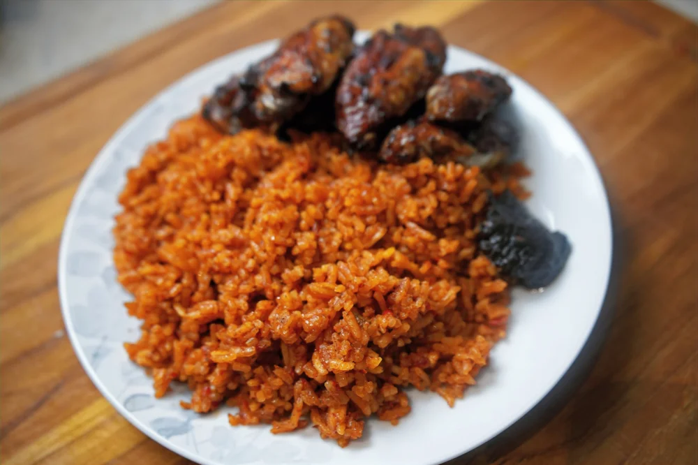

Ghana Jollof Recipe

Description
Ghanaian Jollof Rice is a rich, flavorful, and aromatic West African dish
that has become a favorite across the continent and beyond.
Known for its bright red color and deeply savory taste, it is made by
cooking rice in a spicy, tomato-based sauce with a variety of seasonings
and vegetables.
It is often served with grilled or fried chicken, beef, or fish.
Ingredients
- 2 cups long-grain parboiled rice (or basmati)
- 4 medium tomatoes, blended
- 1 medium onion, chopped
- 2 tablespoons tomato paste
- 1 red bell pepper, blended
- 3 cloves garlic, minced
- 1 teaspoon ginger, grated
- 1 teaspoon thyme
- 1 teaspoon curry powder
- 1 teaspoon white pepper
- 1 teaspoon chicken seasoning or bouillon cubes
- 2 tablespoons vegetable oil (or palm oil for a richer flavor)
Steps
-
Wash the rice thoroughly in cold water until the water runs clear. Drain
and set aside.
-
In a blender, combine the tomatoes, red bell pepper, and scotch bonnet
(if using), then blend until smooth.
-
Heat oil in a large pot over medium heat. Add the chopped onions and
sauté until soft and translucent (about 5-7 minutes).
-
Add minced garlic and grated ginger, stirring frequently to avoid
burning. Sauté for another 2 minutes.
-
Add the blended tomato mixture to the pot and stir. Cook on medium heat
for about 15-20 minutes until the tomatoes have reduced and the oil
begins to separate from the sauce. Stir occasionally to prevent burning.
-
Add the tomato paste, thyme, curry powder, paprika, white pepper, and
chicken seasoning (or bouillon cubes). Stir well to combine. Add a pinch
of salt and adjust to taste. Add a tablespoon of sugar if the tomatoes
are too acidic.
-
Pour in the washed rice and stir to coat the rice with the tomato sauce
and spices. Let it fry gently for about 5 minutes, stirring
occasionally.
-
Cover the pot and allow the rice to cook over low to medium heat for
about 25-30 minutes, or until the liquid is absorbed and the rice is
tender. Avoid stirring too often to prevent the rice from becoming
mushy.
-
If using mixed vegetables, add them in the last 10 minutes of cooking to
allow them to steam and soften with the rice.
-
Once the rice is fully cooked, fluff it with a fork and remove the bay
leaf. Serve hot with your choice of grilled chicken, beef, or fish, and
maybe some fried plantains on the side.
Home